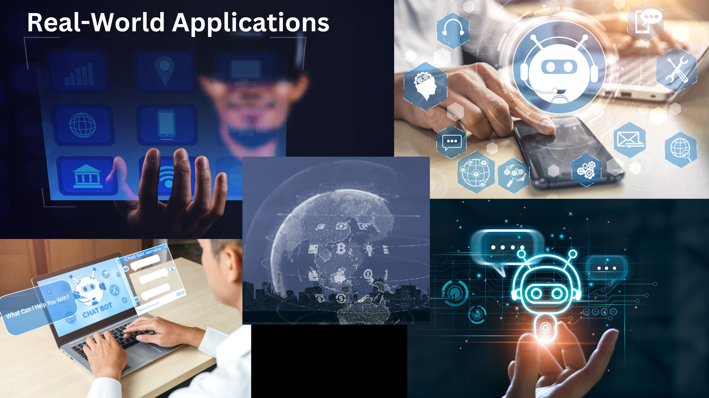
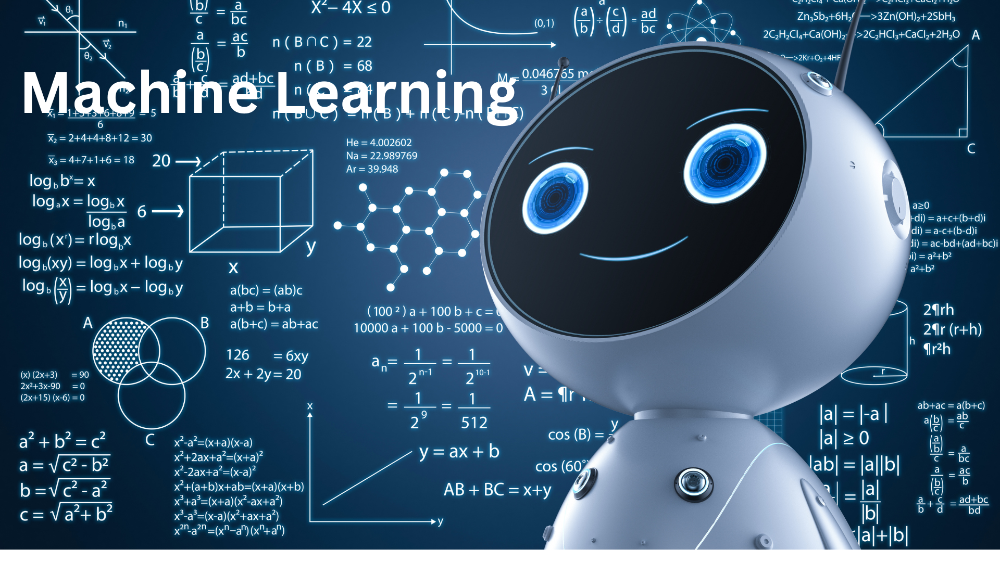
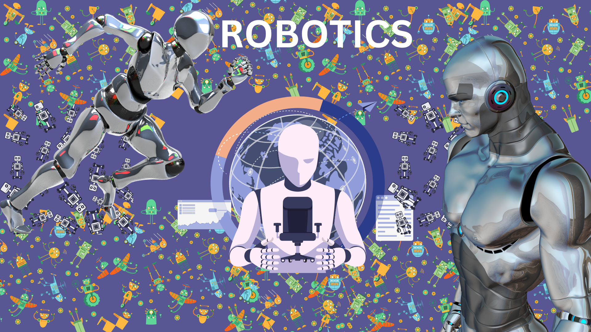
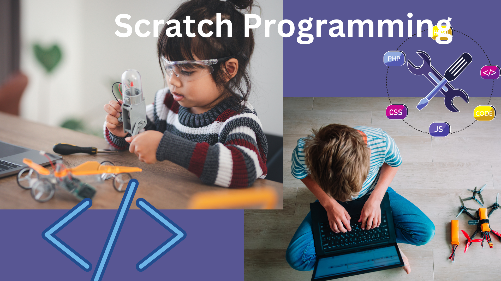
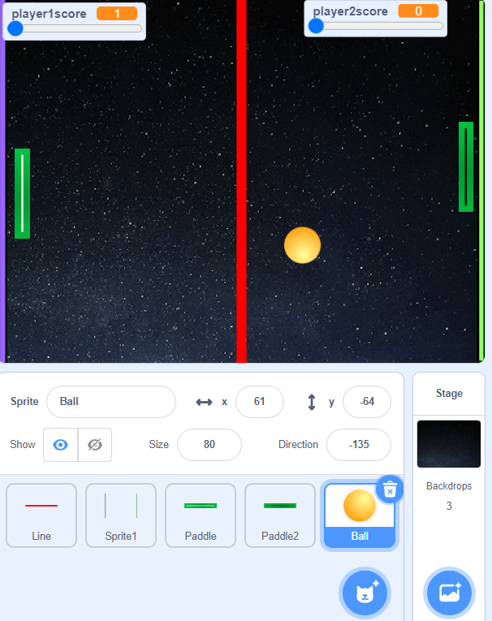
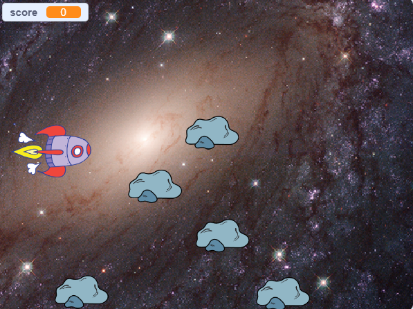

AI Explorer Textbook - For grades 7 - 8
Welcome to AI Explorer
Your gateway to the fascinating world of artificial intelligence. This online handbook is designed specifically for students in grades 7-8, offering a comprehensive and immersive learning experience as you explore AI's key concepts, tools, and applications. Let's embark on this exciting journey together and discover the limitless possibilities of AI.
Introduction to AI: Exploring the Boundless Potential of Artificial Intelligence
Artificial Intelligence (AI) is a captivating field that has revolutionized various domains, impacting our lives in ways we could have never imagined. From enhancing sports analytics to powering interactive games and enabling computer vision, AI has become an indispensable part of our modern world. In this section, we will delve into the fascinating world of AI, uncovering its origins, fundamental principles, and the incredible applications that continue to reshape industries worldwide.
Fundamentals of AI: Unleashing the Power of Intelligent Machines
At its core, AI focuses on creating intelligent machines capable of mimicking human-like cognitive processes. The foundation of AI lies in the development of algorithms and models that enable machines to process vast amounts of data, recognize patterns, and make informed decisions or predictions. These algorithms often fall into two categories: classical AI, which employs rules-based systems, and machine learning, which enables machines to learn from data without explicit programming.
Real-World Applications: Transforming Industries and Empowering Individuals
AI's impact can be witnessed across various sectors, empowering businesses and individuals alike. From healthcare and finance to transportation and entertainment, AI is revolutionizing how we live and work. For instance, in the healthcare industry, AI-powered systems assist in diagnosing diseases, predicting patient outcomes, and accelerating drug discovery. In finance, AI algorithms analyze complex market trends, optimize investment portfolios, and detect fraudulent activities.

AI in Sports: Unleashing Athletes' Potential and Enhancing Performance
The integration of AI in sports has opened up new possibilities for athletes, coaches, and fans. AI-powered systems can analyze vast amounts of data, ranging from player statistics and performance metrics to video footage of games, providing valuable insights for performance optimization and strategy development. Athletes can receive personalized training programs, while teams can make data-driven decisions and predictions, ultimately leading to improved performance and outcomes.
One example of how AI is used in sports is through the application of computer vision technology. Computer vision algorithms can analyze vast amounts of visual data, such as video footage of a game, to extract valuable insights and assist in decision-making. For instance, in soccer, AI-powered computer vision systems can track player movements, identify patterns, and provide real-time analysis of player positioning, ball trajectory, and team formations. This information can be used by coaches and analysts to gain a deeper understanding of the game, devise effective strategies, and make informed tactical decisions. By leveraging AI in sports, teams can enhance their performance, optimize training techniques, and gain a competitive edge.
Computer Vision: Seeing the World Through AI's Eyes
Computer vision, a branch of AI, enables machines to perceive and interpret visual information, just like humans do. It has found applications in diverse fields, including object recognition, image and video analysis, autonomous vehicles, and augmented reality. By leveraging advanced algorithms, computer vision systems can accurately identify objects, track movements, and analyze visual data to extract meaningful insights, enabling a wide range of applications across industries.
Interactive Games Powered by AI: Engaging and Entertaining Experiences
AI has even transformed the world of gaming, creating immersive and interactive experiences. Games like Semantris showcase how AI can enhance entertainment by dynamically adapting to players' actions and providing intelligent responses. By employing natural language processing and machine learning, these games offer unique challenges, adapt to individual playing styles, and constantly learn to provide engaging gameplay.
As AI continues to advance, its potential seems boundless. From its origins in the development of intelligent machines to its transformative impact on sports, computer vision, and interactive gaming, AI has become an integral part of our daily lives. Whether it's improving healthcare, optimizing business processes, or revolutionizing entertainment, AI holds the key to unlocking new frontiers of innovation and discovery. So, embark on this journey through the captivating realm of AI, and witness firsthand how it is shaping our world for a better future.
Machine Learning (ML): Unveiling the Power of Intelligent Data Analysis
Machine Learning (ML) is a captivating field that empowers computers to learn from data, recognize patterns, and make predictions or decisions without explicit programming. In this section, we will take a deep dive into the world of ML, unraveling its core principles, showcasing practical examples and projects, and exploring its diverse applications across industries and domains.
Fundamentals of Machine Learning: Unleashing the Potential of Data
At its core, ML revolves around algorithms that learn from data and iteratively improve their performance over time. These algorithms can be broadly categorized into three types: supervised learning, unsupervised learning, and reinforcement learning. Supervised learning involves training models using labeled data to make predictions or classifications. Unsupervised learning focuses on finding patterns or structures in unlabeled data. Reinforcement learning is about training models to take actions in an environment to maximize rewards.

Solving Problems with ML: From Fahrenheit to Celsius and Cats to Dogs
ML techniques can be applied to a wide range of problem-solving scenarios. Imagine converting temperatures from Fahrenheit to Celsius: ML algorithms can learn the relationship between the two scales from a dataset, enabling accurate conversions for any given temperature. Similarly, ML algorithms can be trained to distinguish between images of cats and dogs, demonstrating their ability to recognize complex patterns and make accurate classifications.
Applications of ML: Transforming Industries and Enhancing Lives
ML has permeated almost every aspect of our lives, revolutionizing industries and offering innovative solutions to complex problems. In healthcare, ML algorithms aid in diagnosing diseases, predicting patient outcomes, and personalizing treatment plans. In finance, ML models analyze market data to forecast trends and make investment recommendations. ML is also crucial in recommendation systems, fraud detection, natural language processing, image recognition, autonomous vehicles, and more. The possibilities are endless.
Hands-on Experience with ML: Making Data Come to Life
Gaining hands-on experience is essential to understanding and mastering ML techniques. Thankfully, intuitive tools and platforms have been developed to make ML more accessible and user-friendly. Platforms like TensorFlow, scikit-learn, and Keras provide a comprehensive ecosystem for building ML models. Online courses and tutorials offer step-by-step guidance, enabling beginners to dive into ML projects, work with real datasets, and witness the power of intelligent data analysis firsthand.
Machine Learning has revolutionized the way we leverage data, empowering us to extract valuable insights, make informed decisions, and solve complex problems. By understanding the fundamentals of ML, solving practical challenges, exploring its wide-ranging applications, and gaining hands-on experience, you can embark on a journey that opens up a world of possibilities. So, step into the fascinating realm of ML, and witness how intelligent data analysis can shape our future.
Robotics: Unleashing the Future of Intelligent Machines
Welcome to the captivating realm of robotics, where science fiction meets reality. In this section, we will embark on a journey to explore the remarkable advancements in robotics and witness how AI-powered robots are revolutionizing industries and transforming our daily lives.

Advancements in Robotics: Bridging the Gap Between Imagination and Reality
Robotics has made tremendous strides in recent years, bringing us closer to a world where intelligent machines seamlessly interact with humans. From humanoid robots capable of human-like movements to specialized robots designed for specific tasks, the field of robotics is constantly pushing boundaries. State-of-the-art sensors, actuators, and control systems enable robots to perceive the environment, make decisions, and execute precise actions with remarkable accuracy.
The Role of AI in Robotics: Infusing Intelligence into Machines
At the heart of modern robotics lies Artificial Intelligence (AI), the driving force behind intelligent machines. AI equips robots with the ability to learn, reason, and adapt to changing circumstances. Machine Learning algorithms empower robots to analyze vast amounts of data, recognize patterns, and continuously improve their performance. With AI, robots can perceive the world through computer vision, understand and respond to human speech, and navigate complex environments with ease.
Transforming Industries: From Healthcare to Manufacturing and Beyond
Robots are making their presence felt across various industries, revolutionizing the way we work and live. In healthcare, surgical robots assist surgeons with precise, minimally invasive procedures, reducing risks and enhancing patient outcomes. Robots automate repetitive tasks in manufacturing, increasing efficiency, accuracy, and productivity. In hospitality, robots serve as concierges, delivery agents, and even companions, enhancing guest experiences. From agriculture to logistics, robots are streamlining operations, improving safety, and augmenting human capabilities.
Future Possibilities and Impact: Shaping a New Era
The impact of robotics on society is poised to be profound and far-reaching. As technology advances, robots will become increasingly integrated into our daily lives, reshaping industries and transforming the nature of work. Collaborative robots, known as cobots, will work side by side with humans, complementing their skills and expanding productivity. Autonomous vehicles will revolutionize transportation, making it safer, more efficient, and environmentally friendly. With the rise of social robots, our interactions with machines will become more personalized and empathetic.
The captivating realm of robotics is no longer confined to science fiction. AI-powered robots are rapidly emerging as key players in industries and our daily lives. By exploring the advancements in robotics, understanding the role of AI, witnessing their impact on diverse domains, and contemplating future possibilities, we can embrace the robotic revolution and envision a future where intelligent machines work hand in hand with humans, creating a world of endless possibilities and transforming the way we live and interact. So, step into the world of robotics, where innovation knows no bounds and the future is within our grasp.
Scratch: Unleash Your Creative Potential with Visual Programming
Get ready to embark on a thrilling journey into the world of programming with Scratch, a user-friendly platform that empowers you to bring your creative ideas to life. In this section, we will delve into the fascinating realm of Scratch, explore its endless possibilities, and guide you through exciting projects that will ignite your imagination.

Unveiling Computing Concepts: Paving the Way to AI
Before we dive into Scratch, it's essential to understand the foundational concepts of computing and their relevance to Artificial Intelligence (AI). From algorithms and sequences to loops and conditionals, these concepts form the building blocks of programming. By grasping these concepts, you will gain a deeper understanding of how AI systems are designed and how they make intelligent decisions.
Welcome to Scratch: Unleashing Your Creativity
Now, let's enter the vibrant world of Scratch, where creativity knows no bounds. Scratch provides a visually intuitive platform that allows you to program by snapping together colorful blocks of code. With its user-friendly interface and engaging features, Scratch makes programming accessible to everyone, regardless of age or experience level.
Exploring the Possibilities: From Animation to Interactivity
Once you're familiar with the Scratch workspace and key terminologies, it's time to explore the vast range of functionalities that Scratch offers. Whether you want to create captivating animations, design interactive stories, or build immersive games, Scratch has you covered. Through hands-on projects, you'll learn how to harness Scratch's power to design and develop projects limited only by your imagination.
Unleashing Your Creativity: Shapes, Animations, and Interactive Games
Now, it's time to unleash your creativity and let your imagination run wild. In this section, we'll guide you through the process of creating shapes, bringing them to life with animations, and designing interactive games that captivate and engage users. With Scratch, you have the tools to craft interactive experiences that showcase your unique ideas and talents.
Scratch opens up a world of possibilities where you can express yourself through programming and unleash your creativity. By mastering the art of Scratch, you'll not only develop your programming skills but also enhance your problem-solving abilities, logical thinking, and computational mindset. So, embrace the magic of Scratch, dive into its functionalities, and let your imagination soar as you create captivating animations, interactive stories, and games that leave a lasting impression. Get ready to embark on an exciting adventure in visual programming with Scratch!
Games using Scratch
Pong Game

The Pong game created in Scratch is a classic and addictive arcade game that brings hours of fun and competition. Players control paddles on opposite sides of the screen, aiming to hit the ball and prevent it from reaching their side. With intuitive controls and engaging gameplay, the Pong game in Scratch challenges players to react quickly, strategize their moves, and outwit their opponents. It showcases the power of Scratch's visual programming interface in creating interactive and entertaining games that captivate players of all ages.
Space Shooter Game

The space shooter game created in Scratch is an exciting and engaging experience. Players control a rocket using arrow keys and can unleash lasers by pressing the space key. The objective is to destroy rocks floating in space by shooting lasers at them. Each successful hit scores points, adding to the player's score. The game offers a thrilling combination of quick reflexes and strategic aiming as players navigate through the asteroid field, dodging obstacles and blasting rocks to achieve high scores. It provides an immersive and enjoyable gaming experience, challenging players to improve their skills and beat their own records.
App Development: Unleash Your Creativity in the Digital World
Welcome to the exciting realm of app development, where you have the power to bring your ideas to life and shape the digital landscape. In this section, we will take you on a thrilling journey into the world of app development and introduce you to Thunkable, an innovative platform that allows you to create mobile apps without any coding knowledge. Get ready to explore the possibilities and embark on a path of turning your app dreams into reality.
Unveiling the Significance of App Development in the Digital Age
In today's digital age, mobile applications have become an integral part of our lives. They enhance our productivity, entertain us, connect us with others, and provide us with valuable services. Understanding the significance of app development allows you to tap into a vast market and make a real impact with your innovative ideas. Discover how apps have revolutionized various industries and learn how you can be part of this transformative journey.
Thunkable: Your Gateway to App Development Without Coding
Meet Thunkable, your new best friend in the world of app development. Thunkable is a user-friendly platform that empowers you to create mobile applications without the need for coding expertise. With its intuitive drag-and-drop interface, Thunkable allows you to assemble app components like building blocks, enabling you to bring your ideas to life effortlessly. Get ready to dive into the world of Thunkable and unlock your app development potential.
Building Your Own Apps: Step-by-Step Tutorials and Examples
Now, it's time to roll up your sleeves and get hands-on with app development. Through step-by-step tutorials and real-world examples, you'll learn the ins and outs of building your own apps using Thunkable. From designing engaging user interfaces to incorporating functionalities like data storage, GPS integration, and multimedia features, you'll gain a comprehensive understanding of the app development process.
Unleashing Your Creativity: Translation Apps, Quiz Apps, and Beyond
With Thunkable as your canvas, the possibilities for app creation are endless. In this section, we'll guide you through the process of building your own apps, such as a translation app or a quiz app, using Thunkable. Unleash your creativity as you design stunning interfaces, implement exciting features, and craft user experiences that leave a lasting impression. You'll be amazed at how quickly you can turn your app ideas into reality.
Unlocking a World of Possibilities with AI Explorer
By exploring the fascinating topics of AI, ML, robotics, Scratch programming, and app development, you are on the path to becoming an AI Explorer. As an AI learner, you'll have access to a vibrant community of passionate individuals, collaborating and exchanging ideas on the AI platform. Join forces with like-minded learners, unlock a world of possibilities, and make a meaningful impact in the realm of AI.
App development offers you a gateway to unleash your creativity, make a difference, and shape the digital world. With Thunkable as your tool and the knowledge gained from AI Explorer, you have the power to create innovative mobile applications that solve real-world problems, entertain and inspire others, and leave a lasting impact. So, take the leap into the world of app development, embrace the power of technology, and embark on a journey where your ideas can change the world.
Conclusion
Throughout this handbook, you've gained a solid understanding of the fundamental concepts, tools, and applications that shape our modern world. You've discovered how AI is transforming industries, enhancing sports analytics, revolutionizing healthcare, and powering interactive games. You've explored the power of Machine Learning in analyzing data, making predictions, and solving complex problems. You've delved into the captivating realm of robotics, witnessing how AI-powered robots are revolutionizing various domains. You've unlocked your creativity in Scratch programming, creating animations, interactive stories, and games. And you've learned how to develop mobile apps without coding using Thunkable, opening up a world of digital innovation.
By completing this ebook, you've taken the first step toward becoming an AI Explorer. As an AI learner, you have the opportunity to join a vibrant community of passionate individuals, collaborate with like-minded learners, and continue your journey of exploration and discovery.
Remember, the knowledge and skills you've gained here are just the beginning. The world of AI is ever-evolving, presenting new challenges and opportunities. Stay curious, continue to learn, and embrace the power of technology to make a meaningful impact.
Now, armed with your newfound knowledge, creativity, and passion, it's time to unleash your potential in the exciting realm of AI, Machine Learning, Robotics, Scratch programming, or App Development. The future is yours to shape, and the possibilities are limitless.
Let your imagination soar and make a lasting impact in the world of technology. Good luck on your AI adventure!